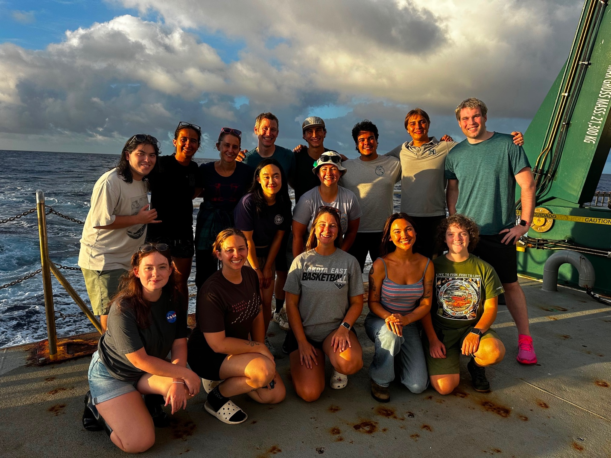
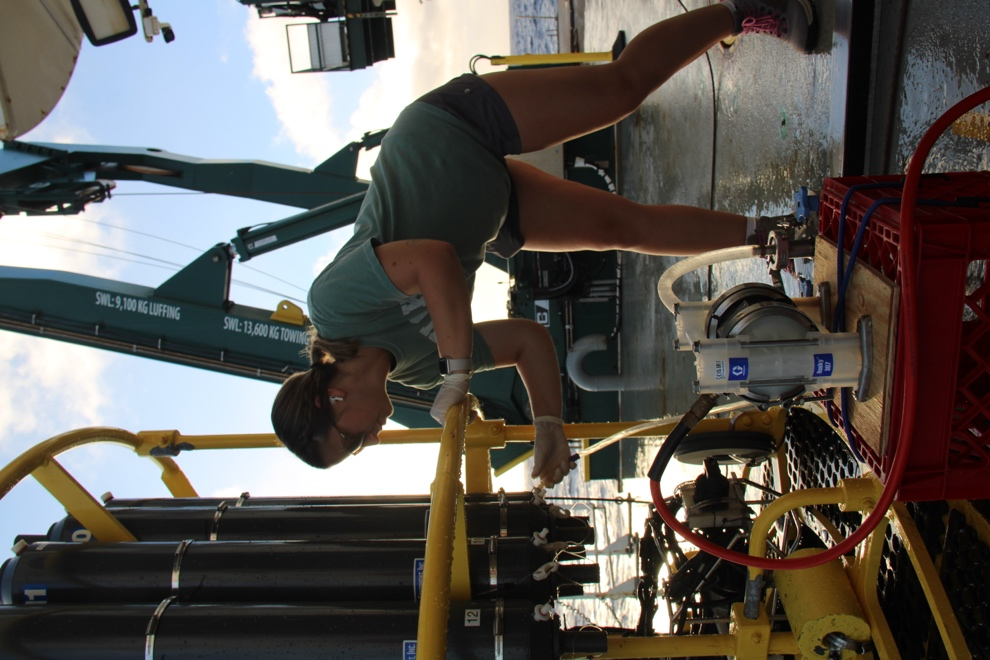
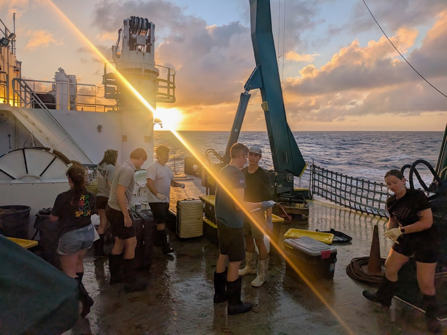
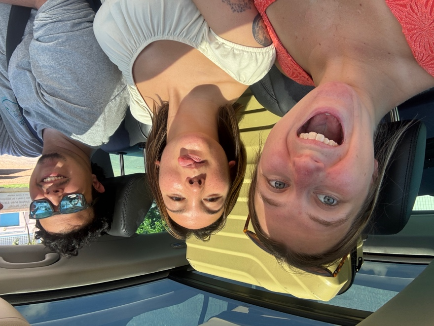
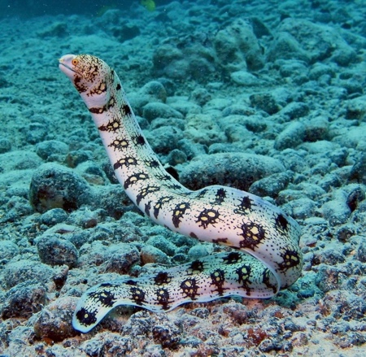

The Ohio State University
August 2026 | Jordan Lehman

The HOT-365 science crew aboard the R/V Kilo Moana. Top row, left to right: Devin Hogate, Kelsey Malone, Hilary Close, Tully Rohrer, Hunter Adams, Mattia Da Fieno, Frey Hebert, and Mike Dowd. Middle row: Wing Kwan Mak (Esther) and Alexis Floback. Bottom row: Paige Dillen, Madi Davis, Jordan Lehman, Lizzy Wu, and Sophia DeMarco.
Hello again!
This August, I had the opportunity to join a five-day research cruise aboard the R/V Kilo Moana with the Hawaii Ocean Time-series (HOT) program. HOT has collected data on the physical, chemical, and biological characteristics of the North Pacific for more than 35 years, making it one of the longest-running oceanographic time series. Station ALOHA was an incredible setting to collect samples, collaborate with other scientists, and contribute to long-term ocean research. Having the opportunity to join a HOT cruise was incredibly special, and I was excited to add some marine fungal knowledge to such a prestigious site!
Going into the cruise, I was most excited to collect seawater for my DNA stable-isotope probing (DNA-SIP) experiment, as well as microbial DNA and RNA samples from different depths in the water column. I quickly learned that shipboard science aboard the R/V Kilo Moana requires more than a careful sampling plan. It requires flexibility, communication, and a whole lot of teamwork. I was incredibly lucky to be surrounded by scientists who were welcoming and positive even in the face of many challenges.
Almost immediately, the cruise plan had to change. Equipment and logistics can make ocean science unpredictable, but I was amazed by how calmly everyone responded. The crew, engineers, marine technicians, and science teams were constantly communicating and working together to keep operations safe while finding ways to continue the science.
Even when the original CTD schedule shifted, there was still plenty happening on deck. Different groups deployed sediment traps, trace-metal CTDs, wirewalkers, McLane pumps, net tows, marine snow catchers, and other instruments. Watching these operations made it clear how many people and moving pieces are involved in a HOT cruise. Every deployment required careful preparation, coordination, and trust between the people on deck and the people in the labs.
I was especially glad to help the SUBSEA team process marine snow catcher samples and prepare their particle interceptor traps. Marine snow consists of sinking particles and organic material in the water column, and studying it helps scientists understand how carbon moves from surface waters toward the deep ocean. Helping with those samples gave me a chance to learn from another group's research while also feeling more connected to the larger scientific goals of the cruise.
Once CTD sampling began in earnest, I collected water from 100 m and 120 m on several casts. For each depth, I set up DNA-SIP incubations with diatoms labeled with either 12C or 13C. DNA-SIP is a method that lets us track which microbes use a particular carbon source. As the microbes consume the 13C-labeled carbon source, some of that carbon can be incorporated into their DNA. Through laboratory methods, we can then identify which microbes are active at each depth by separating the DNA that was being actively replicated. The original plan was to incubate for 72 hours, but the challenges at the beginning of the cruise shortened the incubations to 36 hours. I sampled at 100 m, which corresponded to the deep chlorophyll maximum (DCM), and at 120 m, just below the DCM, where previous work by Peng Lab members found fungal activity to peak.

Sampling DNA and RNA from the CTD using fast filtration with a diaphragm pump.
In addition to the incubations, I filtered seawater onto 0.2 µm filters for future DNA and RNA extraction. These filters capture the microbial community in each water sample, allowing us to later study both which microbes were present (DNA) and what they may have been doing (RNA). Across the casts, I filtered large volumes of water from 100 m and 120 m, collected filtrate for nutrient analysis, and preserved additional samples in formaldehyde.
I also used water from both depths to inoculate 12 different culture media types. Culturing is a very different approach from sequencing-based work. Rather than studying the whole community at once, it gives individual microbes the opportunity to grow under controlled conditions. I am excited to see whether any new or interesting organisms grow from these samples, as this is the first time we have expanded our culturing methods in an attempt to capture different fungal individuals from open-ocean seawater.
One of the highlights of the cruise was the final Station ALOHA CTD cast, when I was able to collect water from near the seafloor—about 4,735 m deep—as well as from 75 m and 150 m. I filtered the deep-water samples for DNA and RNA and used the shallower water for additional cultures and preserved samples. Collecting water from such different depths was a powerful reminder that the ocean is not one uniform environment. Conditions and microbial communities can change dramatically from the sunlit surface to the deep sea.
Throughout the cruise, there were moments when plans needed to be adjusted. Rather than feeling discouraging, those moments showed me how resilient a strong research team can be. People stepped in to help one another, shared equipment when needed, and kept a positive attitude through long shifts and changing schedules. When it came time to harvest the DNA-SIP incubations, our small peristaltic pump was not cooperating. HOT generously let me borrow their larger pump, and I was still able to finish filtering the incubations that night. It was a small example of the collaboration that defined the whole cruise. Science at sea is never a one-person effort.

The science team works together to transport and clean supplies as the sun sets on the final night aboard.
We returned to port tired but proud of everything the teams accomplished. I left with everything I came for, including DNA/RNA filters, microbial cultures, and DNA-SIP samples. More importantly, I left with a deep appreciation for the people who make it possible, from the ship's crew and engineers to the scientists, technicians, and students working around the clock.
After unloading, another visiting student, Lizzy Wu from the Skidaway Institute of Oceanography, and I were lucky enough to go snorkeling with Mattia Da Fieno from HOT before the entire cruise group got together for dinner. It was the perfect ending to a busy week. After spending days collecting water from the ocean's surface all the way to the seafloor, we got to enjoy the ocean simply for how beautiful it is. The running joke at the end of the cruise was that it should be called "COLD-365" rather than "HOT-365" because we encountered almost every issue one could imagine and the cruise might have been cursed. Regardless of all that happened, this cruise experience was extremely positive, and I cannot wait to get back out to Station ALOHA!

Mattia Da Fieno, Lizzy Wu, and Jordan Lehman transporting science equipment after the cruise.

A snowflake moray eel like the one I saw while snorkeling after the cruise. Image source: The Spruce Pets.
I am incredibly grateful to Chief Scientist Tully Rohrer, the HOT program, the R/V Kilo Moana crew, and everyone who shared their time, knowledge, and enthusiasm throughout the cruise. This experience taught me that fieldwork is about more than collecting samples. It is about learning to adapt, supporting your team, and finding a way to keep moving forward together.